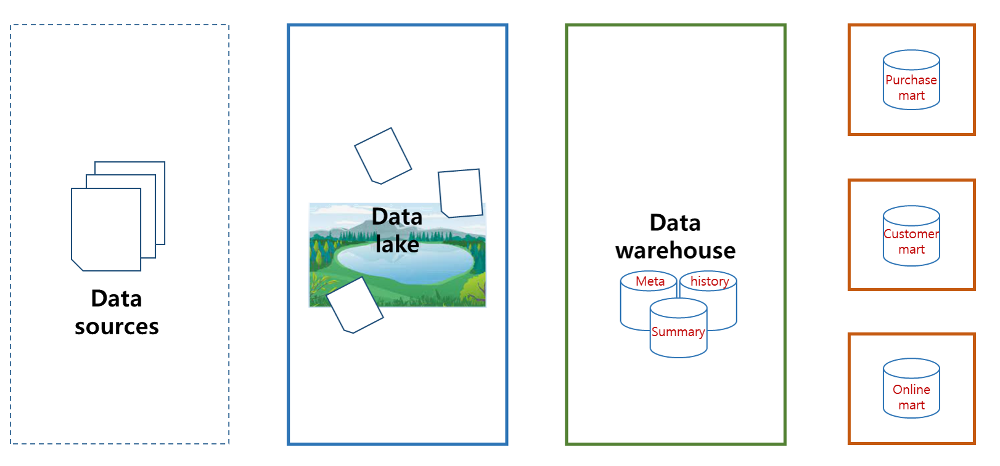
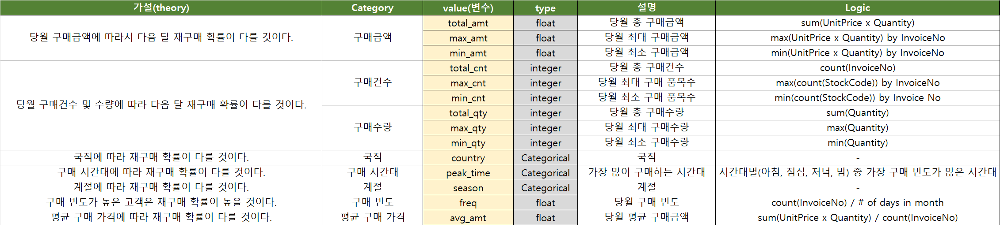
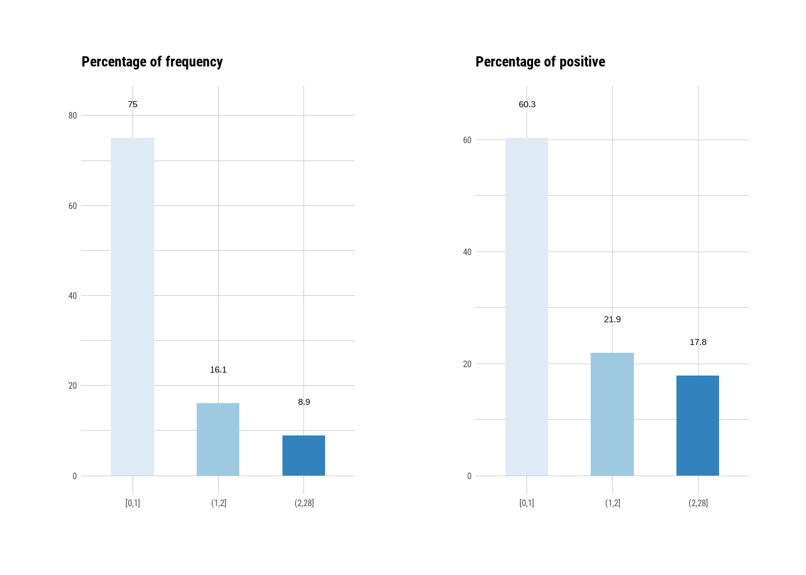
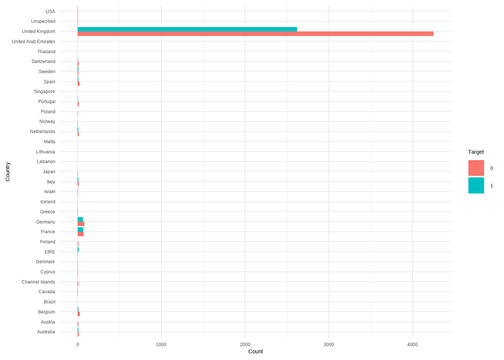

본 포스팅은 패스트캠퍼스 50개 프로젝트로 완벽하게 끝내는 머신러닝 시그니쳐의 강의내용을 바탕으로 참고하여 작성하였습니다.
앞서 E-commerce 데이터 분석 (1)에서 A사가 운영하는 이커머스 플랫폼의 ②유입 고객 재구매를 촉진시키기 위해 7단계의 문제해결 프로세스를 정의했으며, Step 5의 데이터 분석 단계에 필요한 과정을 진행했습니다.
03. Data Mart & Feature Engineering
03-01. Data Mart 기획 및 설계

고객 24,983명에 대한 거래 이력이 총 78만 건 정도였고, 이를 고객 데이터셋을 Undersampling 하여 추출한 분석 대상이 7,495명의 고객 데이터인 상황입니다. UCI Machine Learning Repository의 Online Retail 데이터를 Data Warehouse에서 가져온 데이터이고, 이를 이용해 고객별 구매 이력에 대한 Data Mart를 구성하려고 합니다. 이제 여러 가설을 세워 재구매 여부 target에 영향을 미치는 여러 변수(features)를 만들어 보겠습니다. 아래는 Data Mart를 구성하는 여러 feature 에 대한 설명과 로직이 작성되어 있는 Data Mart 기획서입니다.

03-02. Data 추출 및 Mart 개발
기본적인 전처리가 끝난 후 데이터를 df_origin로 저장되어 있습니다. 샘플링한 표본 데이터를 대상으로 Mart를 구성하기 위해서, 우선 df_origin과 표본 데이터 df_all_sample에 bsym과 CustomerID를 조합해 key 변수를 만들어 보겠습니다.
df_origin %>% head()# A tibble: 6 × 9
InvoiceNo StockCode Description Quantity InvoiceDate UnitPrice CustomerID Country bsym
<chr> <chr> <chr> <int> <dttm> <dbl> <chr> <chr> <chr>
1 489434 85048 "15CM CHRISTMAS GLASS BALL 20 LIGHTS" 12 2009-12-01 07:45:00 6.95 13085 United Kingdom 2009-12
2 489434 79323P "PINK CHERRY LIGHTS" 12 2009-12-01 07:45:00 6.75 13085 United Kingdom 2009-12
3 489434 79323W "WHITE CHERRY LIGHTS" 12 2009-12-01 07:45:00 6.75 13085 United Kingdom 2009-12
4 489434 22041 "RECORD FRAME 7\" SINGLE SIZE" 48 2009-12-01 07:45:00 2.1 13085 United Kingdom 2009-12
5 489434 21232 "STRAWBERRY CERAMIC TRINKET BOX" 24 2009-12-01 07:45:00 1.25 13085 United Kingdom 2009-12
6 489434 22064 "PINK DOUGHNUT TRINKET POT" 24 2009-12-01 07:45:00 1.65 13085 United Kingdom 2009-12df_all_sample %>% head()# A tibble: 6 × 3
bsym CustomerID target
<chr> <chr> <dbl>
1 2009-12 12682 1
2 2009-12 15413 1
3 2009-12 16321 0
4 2009-12 15712 1
5 2009-12 17700 1
6 2009-12 14911 1# df_origin에 key 변수 생성
df_origin <- df_origin %>%
mutate(key = str_c(bsym, CustomerID))
df_origin %>%
reframe(n_key = n_distinct(key))# A tibble: 1 × 1
n_key
<int>
1 25598# df_all_sample에 key 변수 생성
df_all_sample <- df_all_sample %>%
mutate(key = str_c(bsym, CustomerID))
df_all_sample %>%
reframe(n_key = n_distinct(key))# A tibble: 1 × 1
n_key
<int>
1 7495이제 df_origin의 key를 이용해 df_all_sample에 존재하는 행들만 가져와 df_origin_sample 이라는 데이터를 만듭니다.
df_origin_sample <- df_origin %>%
filter(key %in% df_all_sample$key)
# df_origin과 df_origin_sample의 비율: 대략 30% 정도
nrow(df_origin_sample)/nrow(df_origin)[1] 0.2947758Mart 구성
구매금액
- Idea: 월별 구매금액에 따라 다음 달 재구매 확률이 다를 것이다
Mart 기획서의 첫 번째 구매금액 관련 3개의 변수를 만들기 위해 StockCode 당 구매금액을 나타내는 변수 amt를 UnitPrice * Quantity로 정의하겠습니다.
# 1. 구매금액 amt 관련 변수 , max_amt, min_amt
## 1) total_amt: 당월 총 구매금액
df_mart <- df_origin_sample %>%
mutate(amt = UnitPrice * Quantity) %>%
group_by(bsym, CustomerID) %>%
reframe(total_amt = sum(amt, na.rm = T))
## 2) max_amt, min_amt: 당월 송장당 최대/최소 구매금액
df_mart <- df_mart %>% left_join(
df_origin_sample %>%
mutate(amt = UnitPrice * Quantity) %>%
group_by(bsym, CustomerID, InvoiceNo) %>%
reframe(amt = sum(amt, na.rm = T)) %>%
group_by(bsym, CustomerID) %>%
reframe(max_amt = max(amt, na.rm = T),
min_amt = min(amt, na.rm = T)),
by = c("bsym", "CustomerID")
)
df_mart %>% head()# A tibble: 6 × 5
bsym CustomerID total_amt max_amt min_amt
<chr> <chr> <dbl> <dbl> <dbl>
1 2009-12 12437 578. 578. 578.
2 2009-12 12523 74.6 74.6 74.6
3 2009-12 12539 5149. 2583. 2566.
4 2009-12 12557 1953. 1953. 1953.
5 2009-12 12664 549. 549. 549.
6 2009-12 12681 1015. 1015. 1015. 구매건수
- Idea: 월별 구매건수에 따라 다음 달 재구매 확률이 다를 것이다
이제 구매건수(cnt)와 관련된 변수 3가지를 만들겠습니다. 월별 총 구매건수는 total_cnt로, 월별 송장(InvoiceNo)별 구매 품목 수의 최대/최소는 max_cnt, min_cnt로 정의하겠습니다.
# 2. 구매건수 cnt 관련 변수
## 1) total_cnt: 당월 총 구매건수
df_mart <- df_mart %>% left_join(
df_origin_sample %>%
group_by(bsym, CustomerID) %>%
reframe(total_cnt = n_distinct(InvoiceNo)),
by = c("bsym", "CustomerID")
)
## 2) max_cnt, min_cnt: InvoiceNo별 최대/최소 구매 품목 수
df_mart <- df_mart %>%
left_join(
df_origin_sample %>%
group_by(bsym, CustomerID, InvoiceNo) %>%
reframe(cnt = n_distinct(StockCode)) %>%
group_by(bsym, CustomerID) %>%
reframe(max_cnt = max(cnt, na.rm = T),
min_cnt = min(cnt, na.rm = T)),
by = c("bsym", "CustomerID")
)
df_mart %>% head()# A tibble: 6 × 8
bsym CustomerID total_amt max_amt min_amt total_cnt max_cnt min_cnt
<chr> <chr> <dbl> <dbl> <dbl> <int> <int> <int>
1 2009-12 12437 578. 578. 578. 1 27 27
2 2009-12 12523 74.6 74.6 74.6 1 4 4
3 2009-12 12539 5149. 2583. 2566. 2 104 103
4 2009-12 12557 1953. 1953. 1953. 1 3 3
5 2009-12 12664 549. 549. 549. 1 4 4
6 2009-12 12681 1015. 1015. 1015. 1 46 46구매수량
- Idea: 월별 구매수량에 따라 다음 달 재구매 확률이 다를 것이다
# 3. 구매수량 qty 관련 변수
## 1) total_qty: 당월 총 구매수량
df_mart <- df_mart %>% left_join(
df_origin_sample %>%
group_by(bsym, CustomerID) %>%
reframe(total_qty = sum(Quantity, na.rm = T),
max_qty = max(Quantity, na.rm = T),
min_qty = min(Quantity, na.rm = T)),
by = c("bsym", "CustomerID")
)
df_mart %>% head()# A tibble: 6 × 11
bsym CustomerID total_amt max_amt min_amt total_cnt max_cnt min_cnt total_qty max_qty min_qty
<chr> <chr> <dbl> <dbl> <dbl> <int> <int> <int> <int> <int> <int>
1 2009-12 12437 578. 578. 578. 1 27 27 263 24 3
2 2009-12 12523 74.6 74.6 74.6 1 4 4 62 36 4
3 2009-12 12539 5149. 2583. 2566. 2 104 103 2128 48 2
4 2009-12 12557 1953. 1953. 1953. 1 3 3 576 216 144
5 2009-12 12664 549. 549. 549. 1 4 4 134 72 2
6 2009-12 12681 1015. 1015. 1015. 1 46 46 650 72 1국적
- Idea: 국적에 따라 재구매 확률이 다를 것이다
# 4. 국적 변수 생성
df_mart <- df_mart %>% left_join(
df_origin_sample %>%
group_by(bsym, CustomerID) %>%
reframe(Country = first(Country)),
by = c("bsym", "CustomerID")
)
df_mart %>% head()# A tibble: 6 × 12
bsym CustomerID total_amt max_amt min_amt total_cnt max_cnt min_cnt total_qty max_qty min_qty Country
<chr> <chr> <dbl> <dbl> <dbl> <int> <int> <int> <int> <int> <int> <chr>
1 2009-12 12437 578. 578. 578. 1 27 27 263 24 3 France
2 2009-12 12523 74.6 74.6 74.6 1 4 4 62 36 4 France
3 2009-12 12539 5149. 2583. 2566. 2 104 103 2128 48 2 Spain
4 2009-12 12557 1953. 1953. 1953. 1 3 3 576 216 144 Spain
5 2009-12 12664 549. 549. 549. 1 4 4 134 72 2 Finland
6 2009-12 12681 1015. 1015. 1015. 1 46 46 650 72 1 France 구매 시간대
- Idea: 구매 시간대(아침, 점심, 저녁, 밤)에 따라 재구매 확률이 다를 것이다
월별 고객별 아침, 점심, 저녁, 밤에 따른 구매 빈도를 구한 후 가장 많은 시간대를 peak_time이라는 이름의 feature로 선택하겠습니다.
# 5. 구매 시간대(아침, 점심, 저녁, 밤)
## 아침: 6~12시, 점심: 12~18시, 저녁: 18~24시, 밤: 0~6시
## 시간대별 구매 빈도 계산
df_mart <- df_mart %>% left_join(
df_origin_sample %>%
mutate(hour = hour(InvoiceDate),
peak_time = case_when(
hour >= 6 & hour < 12 ~ "Morning",
hour >= 12 & hour < 18 ~ "Afternoon",
hour >= 18 & hour < 24 ~ "Evening",
TRUE ~ "Night"
)) %>%
group_by(bsym, CustomerID, peak_time) %>%
reframe(purchase_cnt = n()) %>%
group_by(bsym, CustomerID) %>%
slice_max(purchase_cnt, n = 1, with_ties = FALSE) %>%
select(-purchase_cnt) %>%
ungroup(),
by = c("bsym", "CustomerID")
)
df_mart %>% head()# A tibble: 6 × 13
bsym CustomerID total_amt max_amt min_amt total_cnt max_cnt min_cnt total_qty max_qty min_qty Country peak_time
<chr> <chr> <dbl> <dbl> <dbl> <int> <int> <int> <int> <int> <int> <chr> <chr>
1 2009-12 12437 578. 578. 578. 1 27 27 263 24 3 France Afternoon
2 2009-12 12523 74.6 74.6 74.6 1 4 4 62 36 4 France Afternoon
3 2009-12 12539 5149. 2583. 2566. 2 104 103 2128 48 2 Spain Afternoon
4 2009-12 12557 1953. 1953. 1953. 1 3 3 576 216 144 Spain Morning
5 2009-12 12664 549. 549. 549. 1 4 4 134 72 2 Finland Morning
6 2009-12 12681 1015. 1015. 1015. 1 46 46 650 72 1 France Afternoon계절
- Idea: 계절에 따라 재구매 확률이 다를 것이다
# 6. 계절 변수 추가
df_mart <- df_mart %>% left_join(
df_origin_sample %>%
mutate(month = month(InvoiceDate),
season = case_when(
month %in% c(3,4,5) ~ "Spring",
month %in% c(6,7,8) ~ "Summer",
month %in% c(9,10,11) ~ "Autumn",
TRUE ~ "Winter"
)) %>%
group_by(bsym, CustomerID) %>%
reframe(season = first(season)),
by = c("bsym", "CustomerID")
)
df_mart %>% head()# A tibble: 6 × 14
bsym CustomerID total_amt max_amt min_amt total_cnt max_cnt min_cnt total_qty max_qty min_qty Country peak_time season
<chr> <chr> <dbl> <dbl> <dbl> <int> <int> <int> <int> <int> <int> <chr> <chr> <chr>
1 2009-12 12437 578. 578. 578. 1 27 27 263 24 3 France Afternoon Winter
2 2009-12 12523 74.6 74.6 74.6 1 4 4 62 36 4 France Afternoon Winter
3 2009-12 12539 5149. 2583. 2566. 2 104 103 2128 48 2 Spain Afternoon Winter
4 2009-12 12557 1953. 1953. 1953. 1 3 3 576 216 144 Spain Morning Winter
5 2009-12 12664 549. 549. 549. 1 4 4 134 72 2 Finland Morning Winter
6 2009-12 12681 1015. 1015. 1015. 1 46 46 650 72 1 France Afternoon Winter구매 빈도
- Idea: 구매 빈도가 높은 고객은 재구매 확률이 높을 것이다
# 7. 당월 구매 빈도
## freq = count(InvoiceNo) / # num of days in month
df_mart <- df_mart %>% left_join(
df_origin_sample %>%
group_by(bsym, CustomerID) %>%
reframe(cnt = n_distinct(InvoiceNo)) %>%
mutate(
tmp_date = as.Date(paste0(bsym, "-01")),
days = as.integer(day(floor_date(tmp_date + months(1), "month") - 1)),
freq = cnt / days
) %>%
select(-c(cnt, tmp_date, days)),
by = c("bsym", "CustomerID")
)
df_mart %>% head()# A tibble: 6 × 15
bsym CustomerID total_amt max_amt min_amt total_cnt max_cnt min_cnt total_qty max_qty min_qty Country peak_time season freq
<chr> <chr> <dbl> <dbl> <dbl> <int> <int> <int> <int> <int> <int> <chr> <chr> <chr> <dbl>
1 2009-12 12437 578. 578. 578. 1 27 27 263 24 3 France Afternoon Winter 0.0323
2 2009-12 12523 74.6 74.6 74.6 1 4 4 62 36 4 France Afternoon Winter 0.0323
3 2009-12 12539 5149. 2583. 2566. 2 104 103 2128 48 2 Spain Afternoon Winter 0.0645
4 2009-12 12557 1953. 1953. 1953. 1 3 3 576 216 144 Spain Morning Winter 0.0323
5 2009-12 12664 549. 549. 549. 1 4 4 134 72 2 Finland Morning Winter 0.0323
6 2009-12 12681 1015. 1015. 1015. 1 46 46 650 72 1 France Afternoon Winter 0.0323평균 구매금액
- Idea: 평균 구매금액에 따라 재구매 확률이 다를 것이다
이 변수는 단순히 total_amt를 total_cnt로 나눈 값입니다.
# 8. 평균 구매금액: avg_amt
## 송장당 평균 구매금액
df_mart <- df_mart %>%
mutate(avg_amt = total_amt / total_cnt)
df_mart %>% head()# A tibble: 6 × 16
bsym CustomerID total_amt max_amt min_amt total_cnt max_cnt min_cnt total_qty max_qty min_qty Country peak_time season freq avg_amt
<chr> <chr> <dbl> <dbl> <dbl> <int> <int> <int> <int> <int> <int> <chr> <chr> <chr> <dbl> <dbl>
1 2009-12 12437 578. 578. 578. 1 27 27 263 24 3 France Afternoon Winter 0.0323 578.
2 2009-12 12523 74.6 74.6 74.6 1 4 4 62 36 4 France Afternoon Winter 0.0323 74.6
3 2009-12 12539 5149. 2583. 2566. 2 104 103 2128 48 2 Spain Afternoon Winter 0.0645 2575.
4 2009-12 12557 1953. 1953. 1953. 1 3 3 576 216 144 Spain Morning Winter 0.0323 1953.
5 2009-12 12664 549. 549. 549. 1 4 4 134 72 2 Finland Morning Winter 0.0323 549.
6 2009-12 12681 1015. 1015. 1015. 1 46 46 650 72 1 France Afternoon Winter 0.0323 1015. 이제 target 변수와 병합해 저장하겠습니다.
df_mart <- df_mart %>% left_join(
df_all_sample %>% select(-key),
by = c("bsym", "CustomerID")
)
df_mart %>% head()# A tibble: 6 × 17
bsym CustomerID total_amt max_amt min_amt total_cnt max_cnt min_cnt total_qty max_qty min_qty Country peak_time season freq avg_amt target
<chr> <chr> <dbl> <dbl> <dbl> <int> <int> <int> <int> <int> <int> <chr> <chr> <chr> <dbl> <dbl> <dbl>
1 2009-12 12437 578. 578. 578. 1 27 27 263 24 3 France Afternoon Winter 0.0323 578. 1
2 2009-12 12523 74.6 74.6 74.6 1 4 4 62 36 4 France Afternoon Winter 0.0323 74.6 0
3 2009-12 12539 5149. 2583. 2566. 2 104 103 2128 48 2 Spain Afternoon Winter 0.0645 2575. 0
4 2009-12 12557 1953. 1953. 1953. 1 3 3 576 216 144 Spain Morning Winter 0.0323 1953. 0
5 2009-12 12664 549. 549. 549. 1 4 4 134 72 2 Finland Morning Winter 0.0323 549. 0
6 2009-12 12681 1015. 1015. 1015. 1 46 46 650 72 1 France Afternoon Winter 0.0323 1015. 1df_mart %>% dim()[1] 7495 1703-03. Numeric Feature Engineering
Feature Engineering
Feature Enigneering이란?
Feature들을 재구성하여 모델을 효과적으로 사용하기 쉽게 하는 작업을 말합니다. 즉, 모델링의 성능을 향상시키기 위해 feature를 생성, 선택, 가공하는 일련의 모든 활동을 의미합니다. Feature의 주요한 특징들을 잘 나타낼 수 있도록 변수의 변환, encoding 등의 작업들이 포함됩니다.
때로는 새로운 feature를 생성하기도 하고, 변환(transformation)도 가능합니다. 또한 Feature selection(변수 선택)과 Feature extraction(차원 축소)를 이용하기도 합니다.
현재 저희의 목적은 다음 달 재구매 여부 target을 잘 분류하는 모델을 구축하는 Classification 문제에 적합한 feature engineering 과정을 적용하겠습니다.
Information Value
이진 분류 문제에서 Event(여기서 target=1인 경우)와 Non Event의 비율을 고려할 때, 각 비율의 불균형한 정도를 확연하게 보고 싶을 때 사용하는 방법입니다. WoE(Weight of Evidence) 값을 아래와 같이 정의해보겠습니다.
\[ \begin{aligned} \text{WoE} &= \text{log}\frac{p}{1-p}\\ where\quad p &= Pr(Event) \end{aligned} \]
즉, WoE는 Event 비율의 Odds 값에 로그를 취한 Logit 값입니다. 어떤 Feature의 각 구간(bin)에 대한 (범주형일 경우 각 level) 정보 가치 값은 \[IV_i = (Event_i\% - NonEvent_i\%)\times WoE_i\]으로 표현할 수 있고, 해당 Feature의 정보가치는 이를 모두 더한 \[IV = \sum IV_i = \sum\{(Event_i\% - NonEvent_i\%)\times WoE_i\}\] 으로 정의할 수 있습니다.
이러한 feature 별 IV 값에 대한 통상적인 기준은 아래와 같습니다.

자세한 내용은 Logistic 예측 모형에서의 변수 선택 방법 - Information Value을 참고하시면 됩니다.
이제 앞서 구성한 Data Mart(df_mart)의 각 feature에 대해서 IV 값을 구해보겠습니다.
df_mart %>%
reframe(across(everything(), typeof))# A tibble: 1 × 17
bsym CustomerID total_amt max_amt min_amt total_cnt max_cnt min_cnt total_qty max_qty min_qty Country peak_time season freq avg_amt target
<chr> <chr> <chr> <chr> <chr> <chr> <chr> <chr> <chr> <chr> <chr> <chr> <chr> <chr> <chr> <chr> <chr>
1 character character double double double integer integer integer integer integer integer character character character double double double우선 수치형 변수들에 대해 각각 5% 단위로 binning을 해주고, 40%, 75% 백분위수를 기준으로 3개의 그룹으로 구간화를 시켜주겠습니다.
iv_calculate <- function(data, var){
quant <- quantile(data[[var]], probs = c(0.40, 0.75))
iv <- data %>%
mutate(grp = findInterval(.data[[var]], quant, rightmost.closed = T) + 1,
n_target = ifelse(target==1, 0, 1)) %>%
group_by(grp) %>%
reframe(
target = sum(target, na.rm = T),
n_target = sum(n_target, na.rm = T)
) %>%
mutate(
good_pct = target / sum(target),
bad_pct = n_target / sum(n_target),
t_ratio = target / (target + n_target),
VAR = var,
iv = (good_pct - bad_pct) * log(good_pct / bad_pct)
)
return(iv)
}
numeric_cols <- df_mart %>% select_if(is.numeric) %>% select(-target) %>% colnames()
iv_df <- map_dfr(numeric_cols, ~ iv_calculate(df_mart, .x))
print(iv_df, n = nrow(iv_df))# A tibble: 30 × 8
grp target n_target good_pct bad_pct t_ratio VAR iv
<dbl> <dbl> <dbl> <dbl> <dbl> <dbl> <chr> <dbl>
1 1 853 2145 0.298 0.463 0.285 total_amt 0.0719
2 2 974 1649 0.341 0.356 0.371 total_amt 0.000631
3 3 1031 843 0.361 0.182 0.550 total_amt 0.123
4 1 909 2089 0.318 0.451 0.303 max_amt 0.0461
5 2 1015 1608 0.355 0.347 0.387 max_amt 0.000200
6 3 934 940 0.327 0.203 0.498 max_amt 0.0593
7 1 1113 1885 0.389 0.407 0.371 min_amt 0.000733
8 2 1015 1608 0.355 0.347 0.387 min_amt 0.000200
9 3 730 1144 0.255 0.247 0.390 min_amt 0.000302
10 2 2350 4476 0.822 0.965 0.344 total_cnt 0.0229
11 3 508 161 0.178 0.0347 0.759 total_cnt 0.234
12 1 1037 1897 0.363 0.409 0.353 max_cnt 0.00555
13 2 1059 1675 0.371 0.361 0.387 max_cnt 0.000237
14 3 762 1065 0.267 0.230 0.417 max_cnt 0.00551
15 1 1199 1716 0.420 0.370 0.411 min_cnt 0.00620
16 2 1004 1719 0.351 0.371 0.369 min_cnt 0.00104
17 3 655 1202 0.229 0.259 0.353 min_cnt 0.00370
18 1 886 2104 0.310 0.454 0.296 total_qty 0.0548
19 2 985 1647 0.345 0.355 0.374 total_qty 0.000318
20 3 987 886 0.345 0.191 0.527 total_qty 0.0913
21 1 667 1435 0.233 0.309 0.317 max_qty 0.0215
22 2 1348 2259 0.472 0.487 0.374 max_qty 0.000502
23 3 843 943 0.295 0.203 0.472 max_qty 0.0341
24 2 2128 3524 0.745 0.760 0.377 min_qty 0.000315
25 3 730 1113 0.255 0.240 0.396 min_qty 0.000957
26 2 2081 4195 0.728 0.905 0.332 freq 0.0383
27 3 777 442 0.272 0.0953 0.637 freq 0.185
28 1 963 2035 0.337 0.439 0.321 avg_amt 0.0269
29 2 1030 1593 0.360 0.344 0.393 avg_amt 0.000807
30 3 865 1009 0.303 0.218 0.462 avg_amt 0.0281 # Feature 별 IV 값 합산
iv_df %>%
group_by(VAR) %>%
reframe(iv = sum(iv)) %>%
arrange(desc(iv))# A tibble: 11 × 2
VAR iv
<chr> <dbl>
1 total_cnt 0.257
2 freq 0.223
3 total_amt 0.195
4 total_qty 0.146
5 max_amt 0.106
6 max_qty 0.0560
7 avg_amt 0.0558
8 max_cnt 0.0113
9 min_cnt 0.0109
10 min_qty 0.00127
11 min_amt 0.00123수치형 변수들에 대해서 이렇게 직접 구간(bin)의 경계값을 지정해서 binning을 할 수 있습니다. 이번에는 target 변수를 잘 예측하는, 즉 변수별 IV 값이 높게 나오도록 구간화를 하는 방법을 소개하겠습니다. 이러한 방법을 optimized binning이라고 합니다.
dlookr 패키지의 binning_by() 함수는 반응변수(target)을 가장 잘 예측하는 경계값으로 수치형 변수를 binning 하기 때문에 변수별로 bin의 개수가 다를 수 있으며, 수치형 변수가 target과 유의한 관계가 없는 경우 구간화를 하지 않아서 변수 선택을 고려할 수도 있습니다.
library(dlookr)
numeric_cols <- df_mart %>% select_if(is.numeric) %>% select(-target) %>% colnames()
# binning_by() 이용 시 target과 유의하지 않은 변수는 구간화를 하지 않음
bin_process <- function(data, var){
tryCatch({
bin <- binning_by(data, target, var)
attr(bin, "name") <- var
return(bin)
}, warning = function(w){
bin <- "No significant splits"
attr(bin, "name") <- var
return(bin)
}, error = function(e){
bin <- "Error"
attr(bin, "name") <- var
return(bin)
})
}
bin_list <- map(numeric_cols, ~bin_process(df_mart, .x))# target과 유의하지 않은 변수 확인:
bin_list %>%
keep(~typeof(.x) == "character") %>%
map(~attr(.x, "name")) %>%
unlist()[1] "min_amt" "min_qty"앞서 40%, 75% 백분위수 값을 경계로 IV 값을 구했 때 가장 낮은 IV 값을 가졌던 min_amt와 min_qty는 최적 구간으로 IV 값을 구했을 경우에도 target과 유의하지 않다고 판단되므로 고려하지 않겠습니다.
Optimized binning이 각 수치형 변수의 몇 % 백분위수를 bin의 경계값으로 삼는지 확인해 보겠습니다.
bin_cutoff <- function(data, bin){
# cutoff level
cutoff <- attr(bin, "breaks")
grp <- c()
for(i in 1:(length(cutoff)-1)){
if(i==1){
brk <- paste0("[", cutoff[i], ",", cutoff[i+1], "]")
} else{
brk <- paste0("(", cutoff[i], ",", cutoff[i+1], "]")
}
grp <- c(grp, brk)
}
attr(bin, "levels") <- grp
# data의 수치형변수에서 해당 cutoff가 몇% 백분위수 인지
value <- cutoff[2:(length(cutoff)-1)]
ecdf_func <- ecdf(data[[attr(bin, "name")]])
percentile <- ecdf_func(value)
return(data.frame(Var = attr(bin, "name"),
cutoff = value,
percentile = scales::percent(percentile, accuracy = 2)))
}
sig_bin_list <- bin_list %>%
keep(~typeof(.x) == "integer")
# Optimized bin의 경계값 분위수 확인
sig_bin_list %>%
map(~bin_cutoff(df_mart, .x)) [[1]]
Var cutoff percentile
1 total_amt 138.70 14%
2 total_amt 219.82 26%
3 total_amt 542.10 70%
4 total_amt 1878.72 94%
[[2]]
Var cutoff percentile
1 max_amt 173.36 20%
2 max_amt 477.46 72%
3 max_amt 1136.68 94%
[[3]]
Var cutoff percentile
1 total_cnt 1 74%
2 total_cnt 2 92%
[[4]]
Var cutoff percentile
1 max_cnt 3 8%
2 max_cnt 44 86%
[[5]]
Var cutoff percentile
1 min_cnt 4 20%
2 min_cnt 32 84%
[[6]]
Var cutoff percentile
1 total_qty 95 22%
2 total_qty 235 58%
3 total_qty 363 74%
4 total_qty 1047 94%
[[7]]
Var cutoff percentile
1 max_qty 19 26%
2 max_qty 90 84%
3 max_qty 144 94%
[[8]]
Var cutoff percentile
1 freq 0.03225806 42%
2 freq 0.03571429 74%
3 freq 0.07142857 92%
[[9]]
Var cutoff percentile
1 avg_amt 154.6950 18%
2 avg_amt 273.6600 44%
3 avg_amt 521.0000 80%
4 avg_amt 609.6733 84%
5 avg_amt 1090.7600 94%# Optimized binning 후 IV 값 확인
sig_bin_list %>%
map(~data.frame(name = attr(.x, "name"),
IV = attr(.x, "performance") %>% pull(IV) %>% .[length(.)])) %>%
list_rbind() %>%
arrange(desc(IV)) name IV
1 total_cnt 0.36390
2 freq 0.36390
3 total_amt 0.28501
4 total_qty 0.21204
5 max_amt 0.12493
6 max_qty 0.08274
7 avg_amt 0.07401
8 max_cnt 0.03034
9 min_cnt 0.01942낮은 IV 값을 가졌던 min_qty와 min_amt를 제외하고 비교해보면, 직접 구간화를 했을 때보다 전반적으로 IV 값들이 높아졌습니다.
Binning 후 각 구간의 분포와 target이 1일 때의 분포 그래프를 확인할 수도 있습니다. 아래는 total_cnt의 최적 구간화 이후 각 구간별 분포와, target이 1인 것의 분포를 나타냅니다.
Code

03-03. Categorical Feature Engineering
범주형 변수인 Country, peak_time, season에 대해서도 IV 값을 구해서 target 변수와의 관계를 살펴보겠습니다.
우선 국적 변수인 Country에 대해 살펴보겠습니다.
# 국적 Country 변수 unique한 값 수
df_mart %>%
reframe(n_uniq = n_distinct(Country))# A tibble: 1 × 1
n_uniq
<int>
1 33Code
df_mart %>%
ggplot(aes(x=Country, fill = factor(target))) +
geom_bar(position = "dodge") +
theme_minimal() +
coord_flip() +
labs(fill = "Target", x = "Country", y = "Count")
Figure 3 을 보면 Country 변수의 대부분이 영국(United Kingdom)임을 알 수 있습니다. 따라서 영국을 제외한 나머지 값들은 기타 국가로 변경하겠습니다.
df_mart %>%
count(Country) %>%
arrange(desc(n)) %>%
mutate(ratio = n/sum(n))# A tibble: 33 × 3
Country n ratio
<chr> <int> <dbl>
1 United Kingdom 6871 0.917
2 Germany 150 0.0200
3 France 144 0.0192
4 Belgium 38 0.00507
5 Spain 33 0.00440
6 Australia 25 0.00334
7 Italy 25 0.00334
8 Netherlands 23 0.00307
9 Switzerland 23 0.00307
10 Portugal 22 0.00294
# ℹ 23 more rows# UK 이외의 기타 국가로 처리
df_mart <- df_mart %>%
mutate(Country = ifelse(Country=="United Kingdom", "UK", "ETC")) 이제 범주형 변수인 Country, peak_time, season의 IV 값을 구해보겠습니다.
✔ Binning on 7495 rows and 2 columns in 00:00:01peak_iv <- woebin(df_mart, "target", "peak_time")✔ Binning on 7495 rows and 2 columns in 00:00:01season_iv <- woebin(df_mart, "target", "season")✔ Binning on 7495 rows and 2 columns in 00:00:01# Country IV
Country_iv$Country %>% tibble()# A tibble: 2 × 12
variable bin count count_distr neg pos posprob woe bin_iv total_iv
<chr> <chr> <int> <dbl> <int> <int> <dbl> <dbl> <dbl> <dbl>
1 Country ETC 624 0.0833 387 237 0.380 -6.42e-3 3.43e-6 3.74e-6
2 Country UK 6871 0.917 4250 2621 0.381 5.82e-4 3.11e-7 3.74e-6
# ℹ 2 more variables: breaks <chr>, is_special_values <lgl># peak_time IV
peak_iv$peak_time %>% tibble()# A tibble: 2 × 12
variable bin count count_distr neg pos posprob woe bin_iv total_iv
<chr> <chr> <int> <dbl> <int> <int> <dbl> <dbl> <dbl> <dbl>
1 peak_time Afte… 4845 0.646 3019 1826 0.377 -0.0189 2.29e-4 0.000646
2 peak_time Morn… 2650 0.354 1618 1032 0.389 0.0343 4.16e-4 0.000646
# ℹ 2 more variables: breaks <chr>, is_special_values <lgl># season IV
season_iv$season %>% tibble()# A tibble: 3 × 12
variable bin count count_distr neg pos posprob woe bin_iv total_iv
<chr> <chr> <int> <dbl> <int> <int> <dbl> <dbl> <dbl> <dbl>
1 season Autumn 2563 0.342 1616 947 0.369 -0.0505 8.65e-4 0.00350
2 season Sprin… 3206 0.428 1996 1210 0.377 -0.0166 1.17e-4 0.00350
3 season Summer 1726 0.230 1025 701 0.406 0.104 2.52e-3 0.00350
# ℹ 2 more variables: breaks <chr>, is_special_values <lgl>target 변수에 대한 범주형 변수들의 IV 값을 보면 굉장히 낮으므로 이 세 변수는 target 변수와 유의미한 관계가 없어 보입니다.